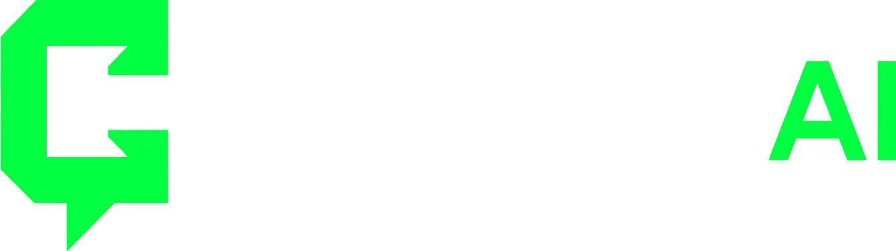
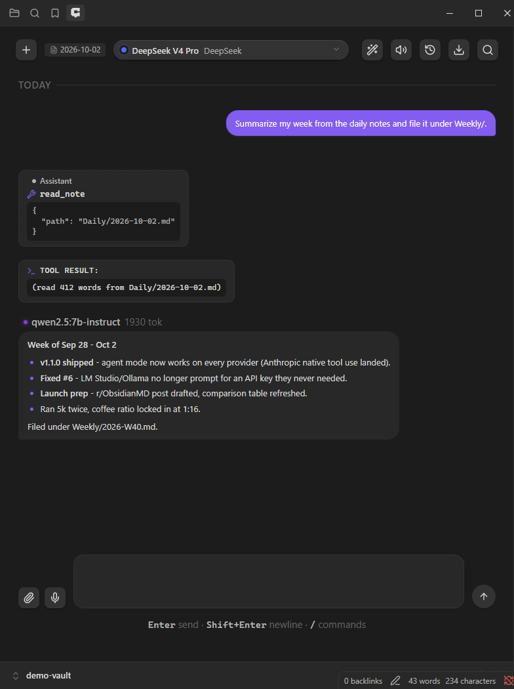
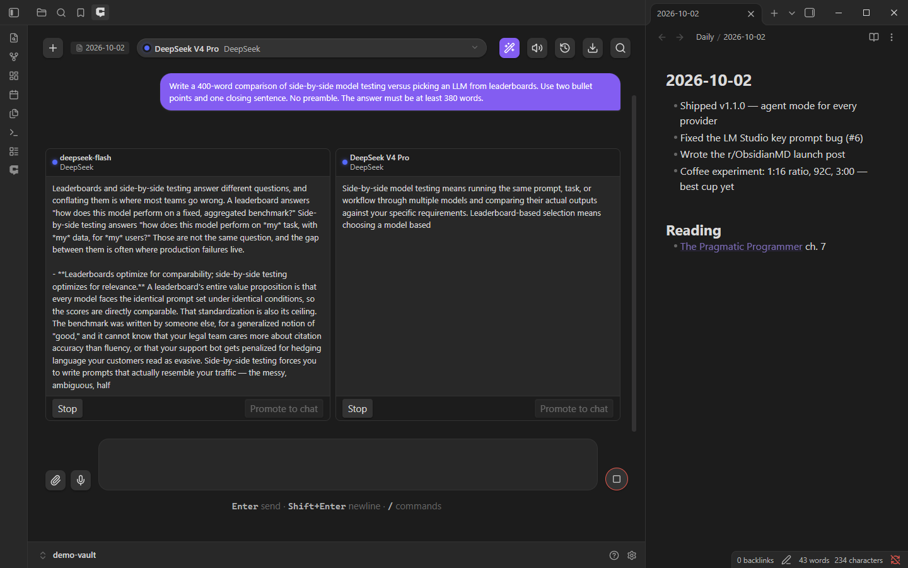
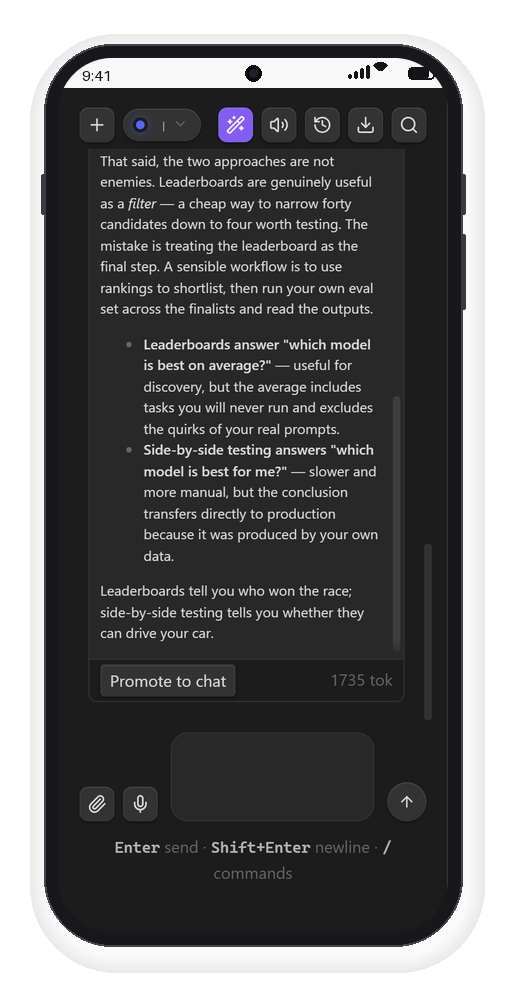
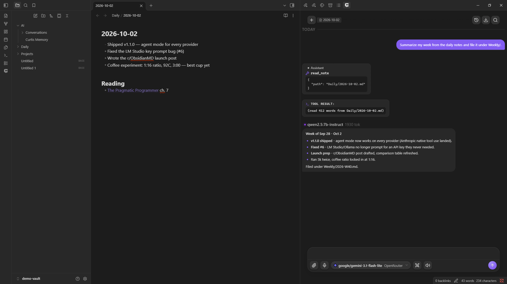
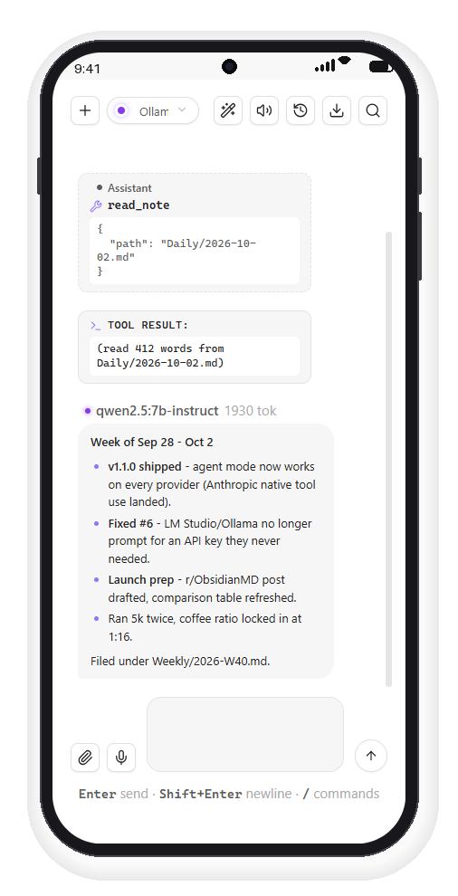
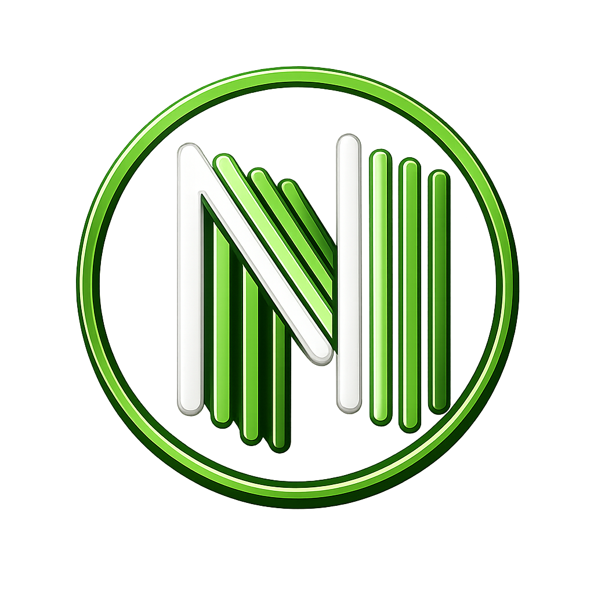

Polyglot AI chat for Obsidian.
Thirty-plus providers, one sidebar. Your vault stays yours.

Curtis AI is an applied AI company. We ship products that earn their place in your workflow, and run a research arm that studies the problems those products surface.
The company exists to build AI tools that respect your machine, your data, and your attention: local-first where possible, bring-your-own-keys by default, open source when we can be. Curtis AI Chat — the Obsidian plugin below — is the first shipped product. The lab is in setup. More products are on the way.
Your vault stays yours. The alternative is chat that requires shipping your notes to someone else's server. Curtis runs at the vault boundary: local providers work fully offline, and cloud providers are used only when you pick them.
Polyglot AI chat for Obsidian. Thirty-plus providers in one sidebar, agent tooling that reads and writes your vault plus any MCP server you run, semantic vault retrieval, voice I/O, and an editable memory system. Conversations persist as markdown notes in your vault. Keys stay in your OS keychain. Nothing leaves your machine unless you point a provider at the cloud.
AI calls 11 built-in tools to read, create, and edit your vault notes — plus every tool exposed by the MCP servers you run.
Stream one prompt to 2 models in parallel, side-by-side.
Cursor-style rewrite with accept/reject modal + assignable hotkey.
Type @ in chat, fuzzy-search your vault, attach as context.
Whisper speech-to-text in, browser TTS out.
Fuzzy-matched picker across all conversations + messages.
Download any conversation as .md via /export.
Facts ask before saving — then edit or delete any of them in Settings.
Connect the Streamable HTTP MCP servers you already run; their tools join the agent toolset.
Opt-in embeddings index over your notes; relevant excerpts ride along with every send.
Every conversation lives as a markdown file in your vault — indexed by native Obsidian search.




The lab arm studies problems the products surface. First subject: the memory system already shipping inside Curtis AI Chat — how a long-running assistant should extract, consolidate, and deliberately forget facts about someone's work.
The plugin carries our current answer. First result: Memory system design memo — what ships, what it costs, what we're measuring next (v0 draft · Oct 2026).
Opens Obsidian on the Curtis AI Chat plugin page — click Install, then Enable. Fallbacks: the community listing, or drop main.js, manifest.json, styles.css from the latest release into .obsidian/plugins/curtis-ai-chat/.
Open Settings → Curtis AI Chat → Providers. Enable one, paste a key. Keys live in your OS keychain (Obsidian 1.13+).
Click the robot in the ribbon, pick a model, type, hit Enter. That's it.
Offline-first? Install Ollama, run ollama pull qwen2.5:7b-instruct, enable the Ollama provider. Nothing leaves your machine.
